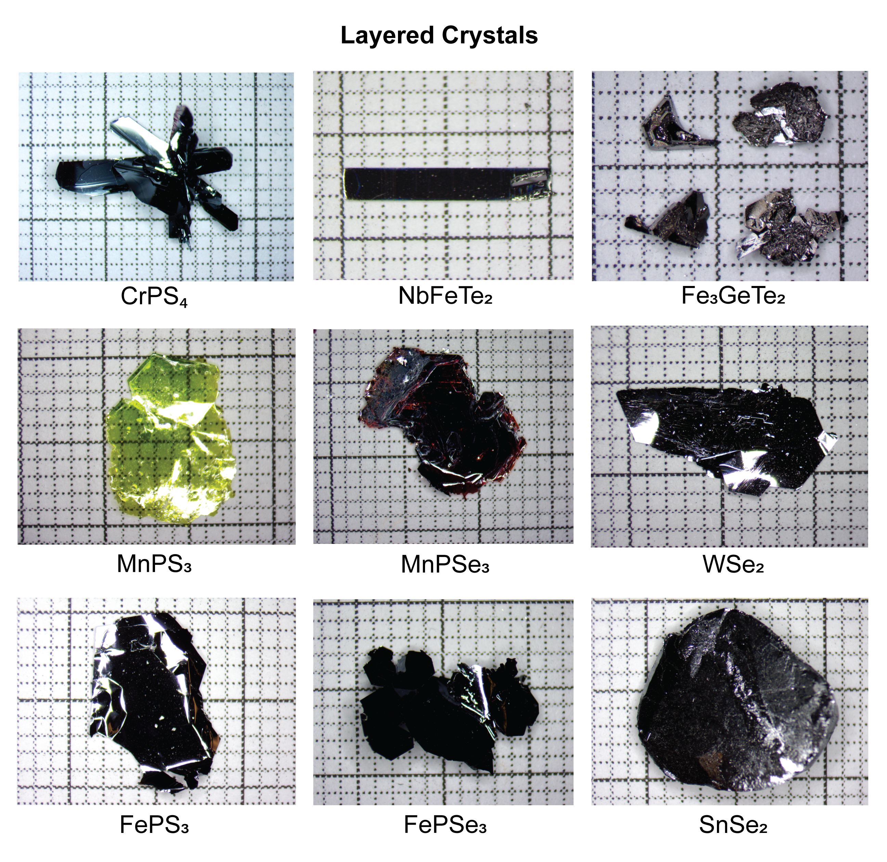

My academic work focuses on 2D magnetic materials, an exciting and rapidly growing area in condensed matter physics.
My research focuses on the synthesis and characterization of two-dimensional magnetic materials. These systems provide a unique platform for exploring low-dimensional magnetism and novel quantum phenomena.
I am particularly interested in understanding how reduced dimensionality influences magnetic ordering, electronic behavior, and coupling effects in layered materials.
These materials have strong potential applications in spintronics and next-generation electronic devices, where control of spin degrees of freedom can enable new functionalities beyond conventional charge-based electronics.

Optical images of layered single crystals synthesized in our research group, including CrPS₄, NbFeTe₂, Fe₃GeTe₂, MnPS₃, MnPSe₃, WSe₂, FePS₃, FePSe₃, and SnSe₂. These materials are studied for their magnetic and electronic properties in low-dimensional systems.